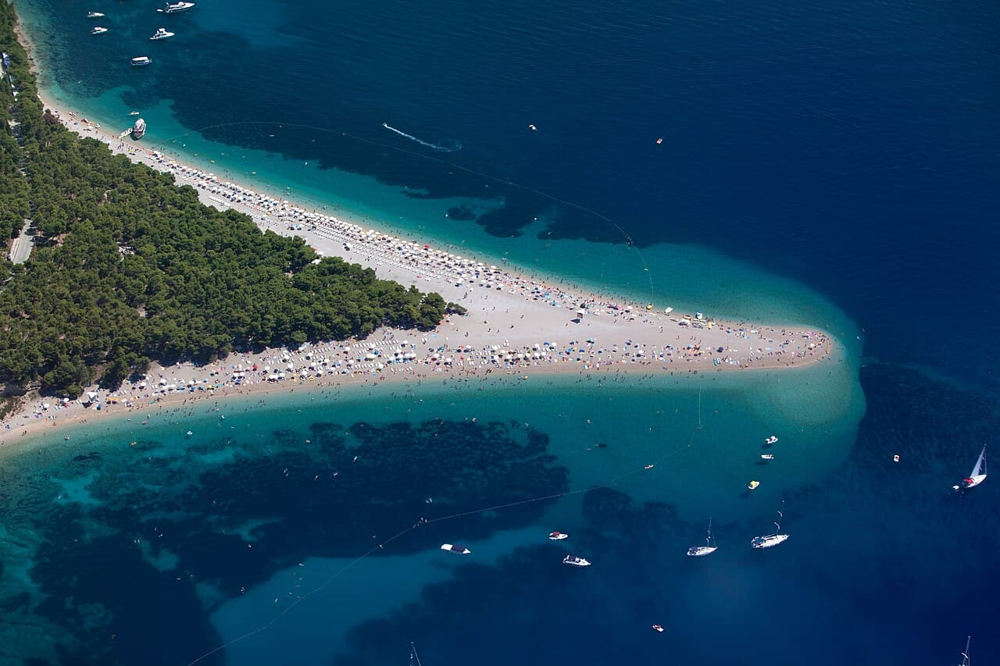

Zlatni Rat — Bol
Croatie · windsurf, kitesurf, baignade, paddle

Une langue de galets qui avance dans l'Adriatique et change de forme avec les courants. Le maestral s'y lève chaque après-midi d'été : c'est le spot de voile de la Dalmatie.
- Lieu
- Croatie
- Niveau
- Intermédiaire
- Activités
- windsurf, kitesurf, baignade, paddle
- Type d'eau
- Mer / océan
- Coordonnées
- 43.26, 16.63 (position approximative du secteur)
Dangers à connaître
- Vent thermique fort et régulier l'après-midi.
- Galets glissants, chaussons conseillés.
- Plage très fréquentée en août.
Le conseil d'Ocean Buddy
Navigue côté est de la pointe le matin, côté ouest quand le maestral s'installe.
Ouvrir dans Ocean Buddy Télécharger sur l'App Store
Source : Description historique Ocean Buddy · vérification externe en attente.